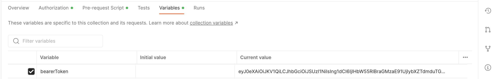
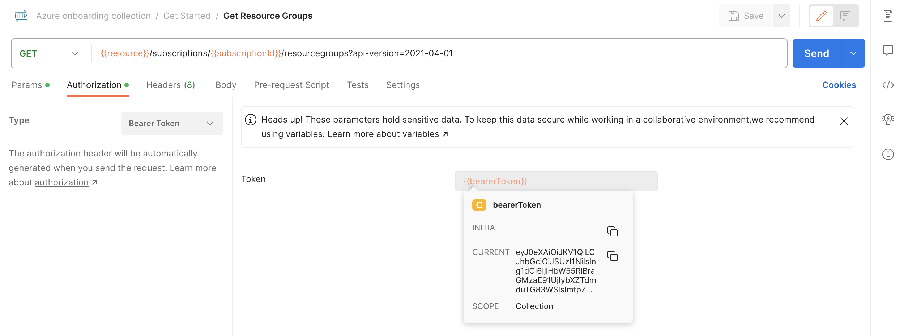
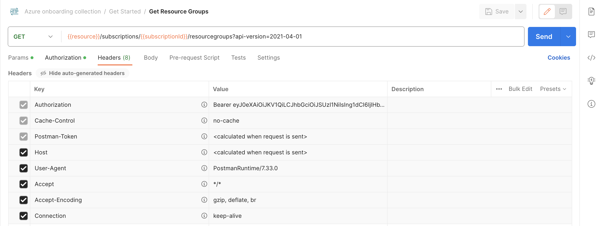
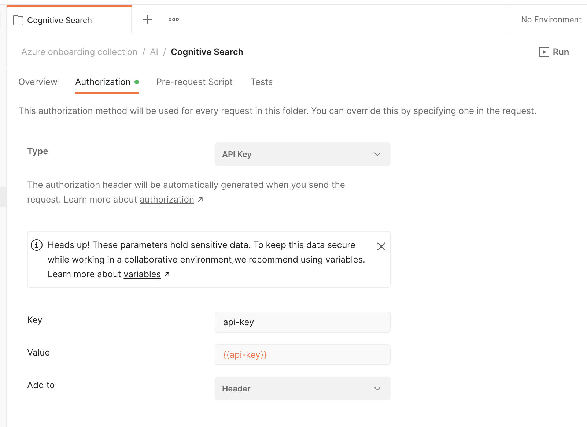
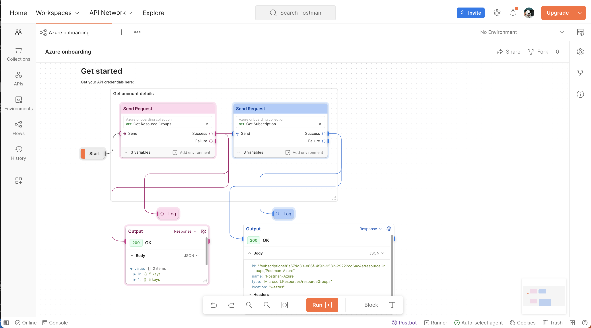
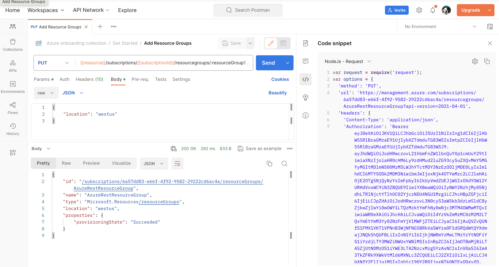

Microsoft Azure provides a number of ways to interact with Azure resources
- Azure SDKs in many languages, including .NET, Python, Java, JavaScript/TypeScript, Go, C++, C, Android, iOS, PHP, and Ruby
- Azure CLI to execute commands
- Azure REST APIs
Learn how to get started with Azure APIs in Postman. If you are using Azure APIs for the first time, you can follow the steps in this guide to call the APIs using requests sent through the Postman client. You can use these requests to experiment with an API before you develop your application, or programmatically run a sequence of API calls to create and manage your infrastructure on Azure.
Prerequisites
- Basic familiarity with APIs
- Basic familiarity with CLI
What You'll Learn
- how to authenticate to Azure APIs using roles
- how to authenticate to Azure APIs using API keys
- how to add resource groups with Azure APIs
- how to troubleshoot unexpected API behavior
- how to automate API workflows for Azure in Postman
What You'll Need
- Azure Cloud with an active subscription
- You must be an Owner or have
Microsoft.Authorization/roleAssignments/writepermissions to manage role assignments - Or have a service principal with Contributor role to create and manage resources
- You must be an Owner or have
- Download and install Postman Desktop App
- Download and install Azure CLI
What You'll Build
- A Postman Collection with authorized API requests
- Code samples to integrate into your own workflows and applications
- API workflows to automate the setup of your infrastructure
In this section, let's use the Azure CLI to generate credentials, and explore how to authenticate with the Azure REST APIs.
Get credentials using Azure CLI
- Log in: From the terminal, use the Azure CLI to run the
az logincommand. You will be redirected to log in to your Azure account in a web browser. Upon successful login, you will be presented with your account details, as shown below. Please take note of theidvariable, as we need this information later. Theidvariable is our subscription ID on Azure.
- Select an active subscription: Select an active Azure subscription using the
az account setcommand. Use the-nparameter to specify the subscription name, i.e:az account set -n "MSDN Platforms Subscription". A list of your subscriptions can be found in the Azure portal. - Create a resource group: Create a resource group using the command
az group create --location [Azure Location, i.e: westus] --resource-group [Resource Group]
- Create a service principal: Azure REST API authentication is done via a Bearer token in the Authentication header. Let's use a service principal to get that token for us. A service principal is an Azure account that allows you to perform actions on Azure resources. Think about it like a system account that you can assign roles to and get tokens with. Create a service principal using the command
az ad sp create-for-rbac -n [SP_Name] --role Owner --scope "/subscriptions/[Subscription_ID]/resourceGroups/[ Resource Group]". The output should look like this: This command will provide the credentials we need to work on Postman to test Azure APIs. Copy the credentials to somewhere safe. Please do not expose the credentials!
This command will provide the credentials we need to work on Postman to test Azure APIs. Copy the credentials to somewhere safe. Please do not expose the credentials!- AppID
- displayname
- Password
- Tenant
--roleflag and specify the scope of the SP credentials with the--scopeflag. Documentations included here.Some built-in roles in Azure role-based access control (RBAC) include:- Owner - Total control of a Resource Group
- Contributor - Has control on Actions on a Resource Group like modifying a Resource Group (i.e. Deleting a VM) but cannot assign permission to the RG.
- Reader - only has the ability to view the resource group.
az ad sp create-for-rbac -n Postman --role Owner --scope{ "appId": "e8df7f8a-XXXX-XXXX-XXXX-XXXXXXXXXXX", "displayName": "azure-cli-2023-XX-XX-XX-XX-XX", "password": "XXXXX~XXXXXXXX.XXXXXXXXXXX", "tenant": "XXXXXX-XXXXX-XXXX-XXXX-XXXXXXXXXXX" } - Get the subscription ID for your Azure Instance: From the terminal, use the Azure CLI command
az account show --query id -o tsvoraz account subscription list. The output should look like the following:az account subscription list The command requires the extension account. Do you want to install it now? The command will continue to run after the extension is installed. (Y/n): y Run 'az config set extension.use_dynamic_install=yes_without_prompt' to allow installing extensions without prompt. Command group 'account subscription' is experimental and under development. Reference and support levels: https://aka.ms/CLI_refstatus [ { "authorizationSource": "Legacy", "displayName": "MSDN Platforms Subscription", "id": "/subscriptions/[subscription ID]", "state": "Enabled", "subscriptionId": "[subscription ID]", "subscriptionPolicies": { "locationPlacementId": "Public_2014-XX-XX", "quotaId": "MSDN_2014-XX-XX", "spendingLimit": "On" } } ]
Input Azure credentials into Postman
- Click the orange Run in Postman button below to fork this example collection to your own Postman workspace.

- In the Postman app, enter a label for your fork and select the workspace to fork the collection:

- Select the Postman collection that you forked to your workspace. Find the Variables tab, and paste your information into each variable value. Map the values from the Service Principal and Subscription ID output from earlier.
Postman variable
Azure data
clientIdappIDclientSecretpasswordtenantIdtenantresourcehttps://management.azure.com/resourceGroup[Resource Group]
subscriptionId[Subscription ID]
bearerToken[leave it blank, we will programmatically fill the field next]
Generate bearer token for authorization
- Review code: Select the Postman collection that you forked to your workspace. Find the Pre-request Script tab containing JavaScript that will execute before every request in the collection. The code will retrieve an OAuth 2.0 bearer token, and then save the value as a collection variable to be re-used throughout the collection.
pm.test("Check for collectionVariables", function () { let vars = ['clientId', 'clientSecret', 'tenantId', 'subscriptionId']; vars.forEach(function (item, index, array) { console.log(item, index); pm.expect(pm.collectionVariables.get(item), item + " variable not set").to.not.be.undefined; pm.expect(pm.collectionVariables.get(item), item + " variable not set").to.not.be.empty; }); if (!pm.collectionVariables.get("bearerToken") || Date.now() > new Date(pm.collectionVariables.get("bearerTokenExpiresOn") * 1000)) { pm.sendRequest({ url: 'https://login.microsoftonline.com/' + pm.collectionVariables.get("tenantId") + '/oauth2/token', method: 'POST', header: 'Content-Type: application/x-www-form-urlencoded', body: { mode: 'urlencoded', urlencoded: [ { key: "grant_type", value: "client_credentials", disabled: false }, { key: "client_id", value: pm.collectionVariables.get("clientId"), disabled: false }, { key: "client_secret", value: pm.collectionVariables.get("clientSecret"), disabled: false }, { key: "resource", value: pm.collectionVariables.get("resource") || "https://management.azure.com/", disabled: false } ] } }, function (err, res) { if (err) { console.log(err); } else { let resJson = res.json(); pm.collectionVariables.set("bearerTokenExpiresOn", resJson.expires_on); pm.collectionVariables.set("bearerToken", resJson.access_token); } }); } }); - Set token: Within the "Get Started" folder, select the "Get Resource Groups" request. Send the API request. Upon a successful response from the server, note two events that occurred.
- Bearer token set: Select the collection, tab over to Variables, and notice a current value is saved under
bearerToken. This happened when the pre-request script executed.  - Verify Authorization helper: Select the request "Get Resource Groups". Under the Authorization tab, note the request inherits the same authorization method, "Bearer Token", from the collection. Configuring Authorization in this manner ensures that Postman will append the token value to the text
Bearerin the required format to the requestAuthorizationheader.  - Inspect Authorization header: Under the Headers tab, you may need to expand the headers auto-generated by Postman to see an
Authorizationheader with a value formatted likeBearer xxxwherexxxis the saved token. 
- Bearer token set: Select the collection, tab over to Variables, and notice a current value is saved under
Now that you have properly configured the authorization at the collection-level, you can re-use it throughout other requests within the collection, unless otherwise configured.
In the next sections, let's explore other Azure APIs.
In the previous section, you may have already made your first successful Azure REST API request. Let's review.
- Get resource groups: Within the "Get Started" folder, select the "Get Resource Groups" request. Send the API request.

- Add resource group: Next, select the "Add Resource Groups" request. Notice the HTTP method is
PUT(instead ofGET). Also notice a path variable notated as:resourceGroupin the request URl and editable under the Params tab next toresourceGroupkey. Feel free to update the value to your own resource group name. Under the Body tab, feel free to update the requiredlocation. And then Send the API request.
Check out other Azure REST APIs for the Resource Group.
For each Azure resource that you plan to work with, add the resource to your resource group.
Each of the following APIs will explore a specific Azure resource corresponding to the specific AI service as a prerequisite. However, if you will be using multiple AI services in the same project, you can create a Cognitive Services resource instead, which provides access to Vision, Language, Search, and Speech services using a single API.
Not all of the following services are available in every region. Please refer to Azure Products by Region to ensure that you pick a correct region when creating your resource.
Cognitive Search
Azure Cognitive Search is a cloud search service that gives developers infrastructure, APIs, and tools for building a rich search experience over private, heterogeneous content in web, mobile, and enterprise applications.
Create resource and index
- Create Azure resource: From the Azure portal, click the plus sign ("+ Create Resource") in the top-left corner, and use the search bar to find "Azure Cognitive Search". Set up an Azure Cognitive Search resource OR an Azure Cognitive Services resource (recommended if you are using multiple AI services within the same project)

- Configure service: Choose a subscription, set a resource group, name the service, choose a region and tier, and create the new service. Your service is deployed within minutes.

- Import data: Go to your newly deployed resource. On the Overview page, select Import data to create and populate a search index.

- Connect to a data source: In the Import data wizard on the Connect to your data tab, expand the Data Source dropdown list and select Samples. In the list of built-in samples, select hotels-sample. Select Skip to: Customize target index to continue.

- Customize target index: Accept the system-generated values. Select Next: Create an indexer to continue.
- Create an indexer: Accept the system-generated values. Select Submit to create and simultaneously run the indexer.
Authorization
- Authorize API access with key: Go to your newly deployed resource. Under the Keys tab in the sidebar, you can see the default API access control is set up to "API keys".
- Input API key into Postman: In Postman, you can use an API key by including a header
api-keywith each individual request or at the folder-level so that requests within the folder inherit the authorization method. Select the "Cognitive Search" folder and configure the Authorization method to automatically add anapi-keyheader to each request within the folder. Remember to also save your API key as a collection variable.  - Input Postman variables: In addition to adding your API key as a collection variable, update the
searchServiceNameandsearchIndexNameto begin exploring the Azure Cognitive Search API.
Other AI APIs
In Postman, explore other Azure AI services within the "AI" folder. Notice folder-level authorization methods. And expand the request documentation using the icon on the far right for more details and links to additional resources.
Debugging unexpected behavior
If your API request isn't behaving as expected, there can be many possible reasons. To find out what the problem is, you can use the Postman Console to troubleshoot your request.
Open the Console by selecting Console icon in the Postman footer. You can view network data, log statements, and the raw calls being sent through Postman. 
Organize workflows in Postman
Once you explore an API, you understand the basic building blocks of popular services on Azure. Next, organize your work into your own collections and workspaces in Postman.
- Create your own collections of API calls for automating deployments and monitoring infrastructure.
- Create your own workspaces to organize work for an API or collaborate with team members.
- Create your own Flows to visualize API workflows
Automate workflows in Postman
Once you group API requests into collections, there are multiple ways to programmatically run those collections.
- Add tests and scripts to dynamically pass information from one request to another
- Utilize inbuilt Postman integrations, such as deploying to Azure API Management
- Run collections on a scheduled frequency on Postman servers, as part of your CI/CD pipeline, or via webhooks
Build your own applications
Once you have an API call working the way you want it to in Postman, generate client code to paste into your own applications. 
What we've covered
- how to authenticate to Azure APIs using roles
- how to authenticate to Azure APIs using API keys
- how to add resource groups with Azure APIs
- how to troubleshoot unexpected API behavior
- how to automate API workflows for Azure in Postman
For more hands-on tutorials, check out these resources.
- Check back for more Azure tutorials
- Contribute your own tutorials here
Other Azure integrations in Postman
- Azure DevOps to sync your Postman APIs to Git repositories
- Manage API deployments to Azure API Management in Postman
- Integrate Postman with Azure Pipelines
- Configure SSO with Microsoft Entra ID (formerly Azure Active Directory)
- Connect your API to an on-premises Git repository